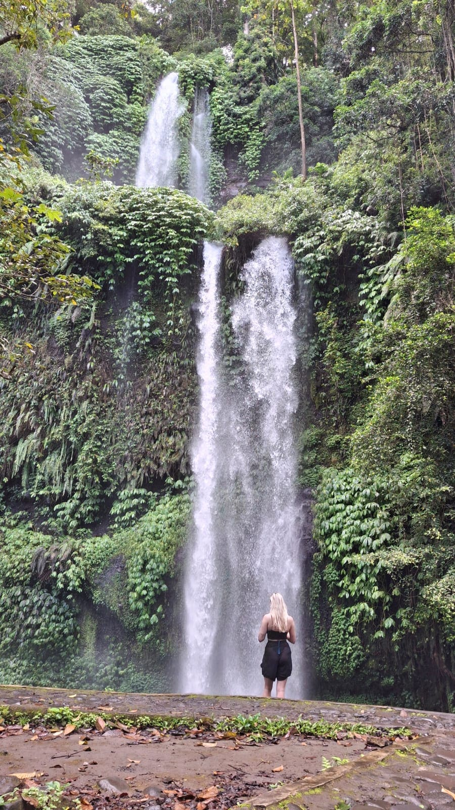
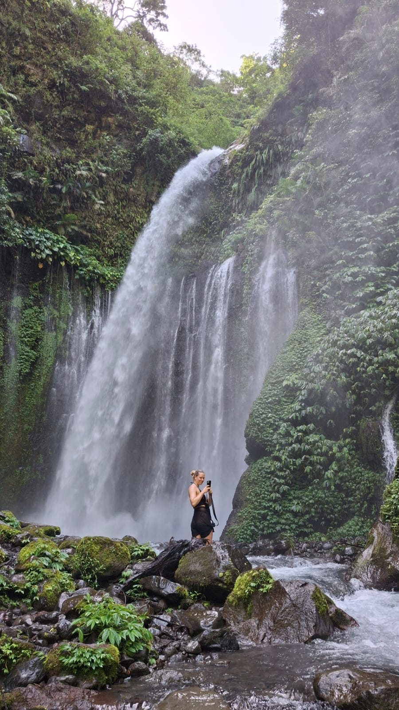

Senaru Waterfalls & Village Tour
A Half-Day Adventure Through the Hidden Paradise of Mount Rinjani
Overview
Hidden on the northern slopes of Mount Rinjani lies the small village of Senaru, home to two of Lombok Island’s most enchanting natural gems: Sendang Gile and Tiu Kelep Waterfalls. Surrounded by pristine tropical rainforests, this area is part of the Mount Rinjani National Park and has long been a favorite destination for travelers seeking a perfect blend of nature and authentic Sasak culture.
For those who wish to experience the beauty of Rinjani without committing to a grueling multi-day trek, the Senaru Waterfall & Village Tour is the ultimate answer. In just about seven hours, you will enjoy a light trek through lush forests, immerse yourself in the refreshing waters of two iconic falls, and witness the traditional way of life at the ancient Senaru Sasak Village.
Why This Tour Belongs on Your Itinerary
- Suitable for all fitness levels: The trekking path is relatively light and can be enjoyed by families, couples, or solo travelers with zero prior hiking experience.
- Two waterfalls in one trip: It is rare to find a destination that offers two spectacular waterfalls within such close proximity.
- Authentic cultural touch: Visiting the Senaru Traditional Village provides an educational experience regarding Sasak architecture, customs, and life philosophy.
- Fresh mountain air: Located at the foothills of Rinjani, the temperature in Senaru is significantly cooler and fresher compared to Lombok’s coastal areas.
- Short duration, deep impression: Ideal as a warm-up before a Rinjani climb, a relaxing post-trek recovery, or simply a refreshing break from the beaches of Lombok and the Gili Islands.
Detailed Itinerary
- 09:00 AM — Hotel Pick-up: The journey begins with a pick-up from your hotel in the Senaru area. Our local guide will provide a quick briefing about the route, trail conditions, and necessary gear before entering the conservation area.
- 09:30 AM — Descent to Sendang Gile: Walk down natural stone steps through dense tropical forest. Surrounded by green valleys, river sounds, and birdsong, you will reach Sendang Gile (31 meters high), a waterfall locally believed to hold spiritual blessings of fertility and prosperity.
- 10:30 AM — Jungle Trek & River Crossing to Tiu Kelep: The trail becomes more adventurous as you cross a shallow river and navigate forest rocks to reach Tiu Kelep. Renowned as one of Lombok's most beautiful waterfalls, it forms a massive natural water curtain. You can safely swim in the crystal-clear natural pool beneath it.
- 01:00 PM — Local Lunch: After enjoying the water, you will be guided to a local restaurant to savor authentic Lombok cuisine, recover your energy, and chat with your guide about local life.
- 02:30 PM — Exploring Senaru Traditional Village: Visit one of the oldest Sasak traditional villages. See ancient thatched-roof wooden houses and learn about the architectural philosophy and rituals that show how locals have lived in harmony with nature for centuries.
- 04:00 PM — Return to Hotel: The tour concludes as we drop you back at your hotel, leaving you with unforgettable memories of tropical forests, majestic waterfalls, and cultural insights.
Tour Gallery



Preparation Tips
- Wear trekking shoes or sandals with good grip; some rocks and stairs can be slippery.
- Bring a change of clothes if you plan to swim at Tiu Kelep, plus a plastic bag for wet items.
- Pack a light raincoat or poncho, especially during the wet season (Nov–April).
- Carry enough drinking water and energy snacks.
- Apply sunscreen and mosquito repellent.
- Bring a waterproof phone case or action camera to safely capture the waterfall spray.
Best Time to Visit
This tour is available year-round. However, the best conditions are usually during the dry season (May–October), when the trails are dry and the waterfall streams are powerful yet crystal clear.
During the rainy season, access to Tiu Kelep is occasionally temporarily closed by National Park authorities if river water levels get too high for safe crossing. We always check live conditions before departure to guarantee your safety.
Tour Price
IDR 450,000 /person
- Professional Local Guide
- Official Entrance Tickets
- Hotel Pick-up & Drop-off (Senaru Area)